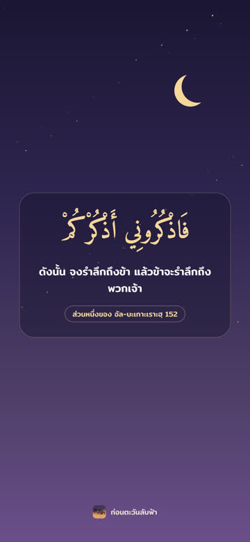
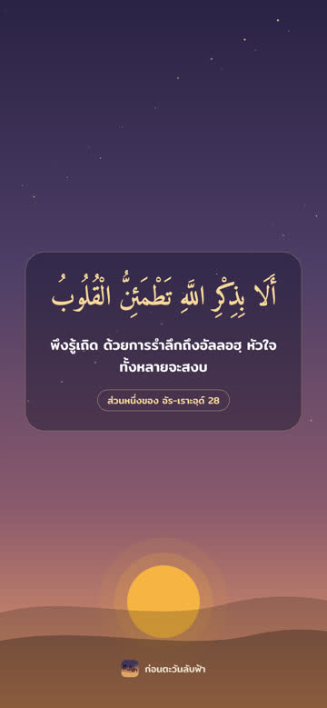
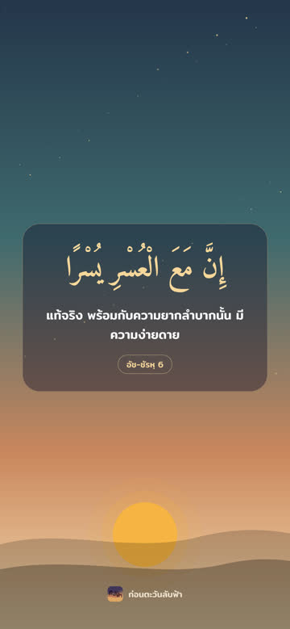
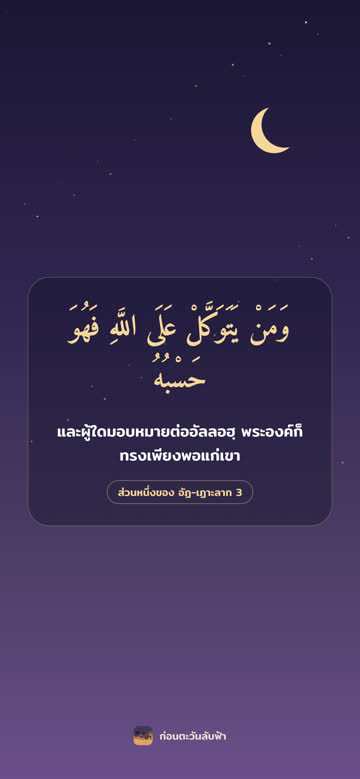
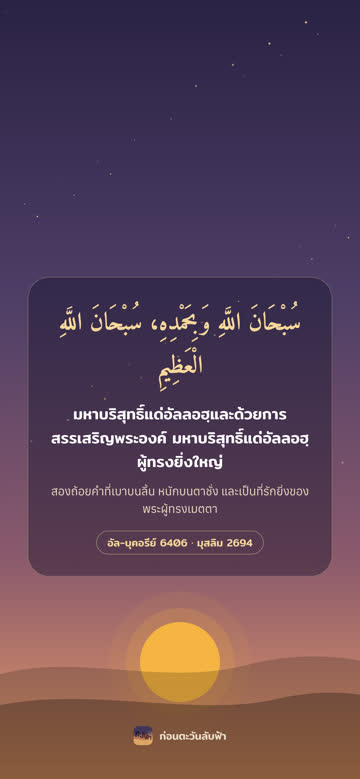
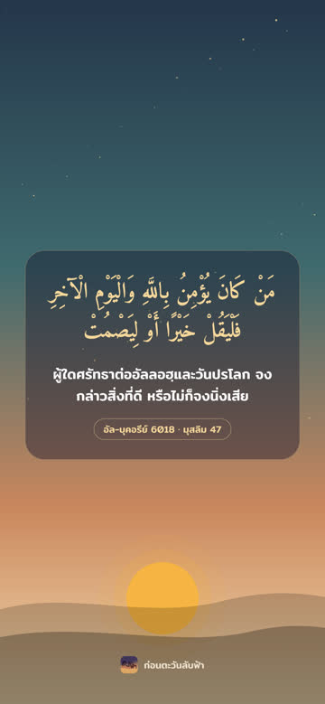

วอลเปเปอร์มือถือ ชุดที่ 1
อายะฮฺและหะดีษสั้น ๆ พร้อมความหมายและที่มา 6 แบบ ขนาดพอดีจอมือถือ แจกฟรี ห้ามนำไปจำหน่าย
วิธีบันทึกบนไอโฟนและไอแพด
แตะที่รูปเพื่อเปิดภาพเต็ม แล้วแตะค้างที่รูป เลือก “บันทึกไปยังรูปภาพ” จากนั้นเปิดแอปรูปภาพ แตะปุ่มแชร์ แล้วเลือก “ใช้เป็นภาพพื้นหลัง”
บน Android และคอมพิวเตอร์ แตะปุ่ม “บันทึกรูปนี้” ใต้รูปได้เลย
แตะที่รูปเพื่อเปิดภาพเต็ม แล้วแตะค้างที่รูป เลือก “บันทึกไปยังรูปภาพ” จากนั้นเปิดแอปรูปภาพ แตะปุ่มแชร์ แล้วเลือก “ใช้เป็นภาพพื้นหลัง”
บน Android และคอมพิวเตอร์ แตะปุ่ม “บันทึกรูปนี้” ใต้รูปได้เลย












ช่องก่อนตะวันลับฟ้า · kontawanlapfah.github.io